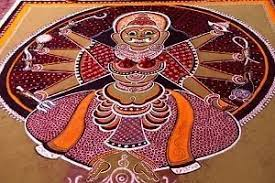

TAMIL NADU

Kalamezhuthu is an ancient art woven into the ritualistic mores of Bhagavati, Naga and Ayyappa temples in Kerala,” explained Suresh.
“It refers to the pictorial representation of deities on the floor (kalam) using coloured powders (kolappodi) during ceremonies. When combined with the singing of specific songs (kalampaattu) and dance movements related to the puja (kalapradakshinam), it becomes a ritualistic performance known as ‘kalamezhuthum paattum’ or ‘kalamezhuthupaattu’.